JUSTLAB · Engenharia Bioquímica
Algas
combustíveis
e materiais
Do nosso trajeto ao bioprocesso
Como chegamos ao campus?
Pense em uma semana habitual de aulas.
Abrir painel em outra janela10–12 min
O painel online mostra o total da turma e a média por pessoa.
Além do trajeto
Qual fronteira estamos comparando?
A expansão da energia fóssil
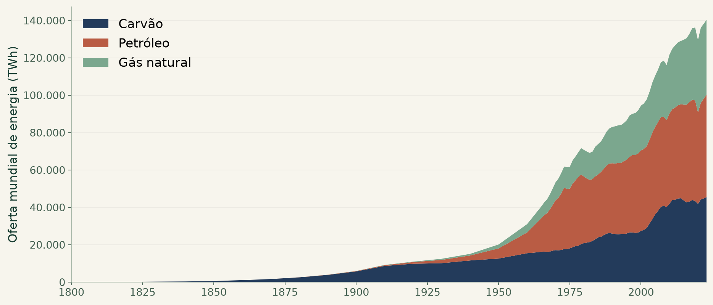
Energy Institute, Smil e EIA · Our World in Data · série até 2023
De onde vem a energia?
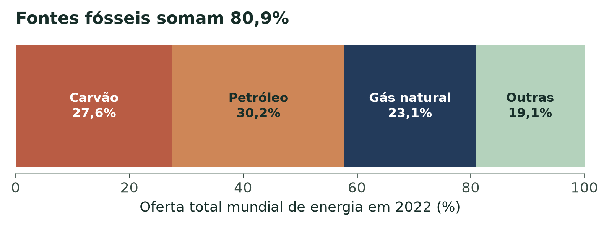
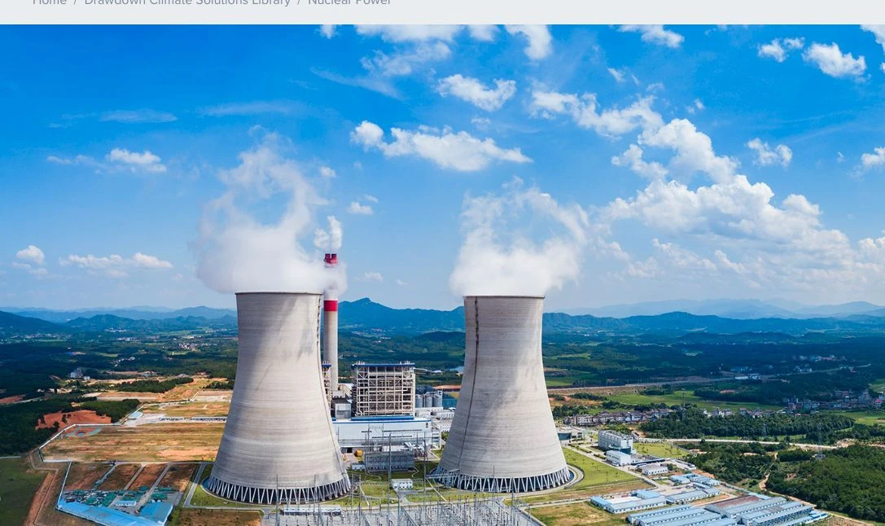
CO₂ do transporte
Participação por modo · 2018
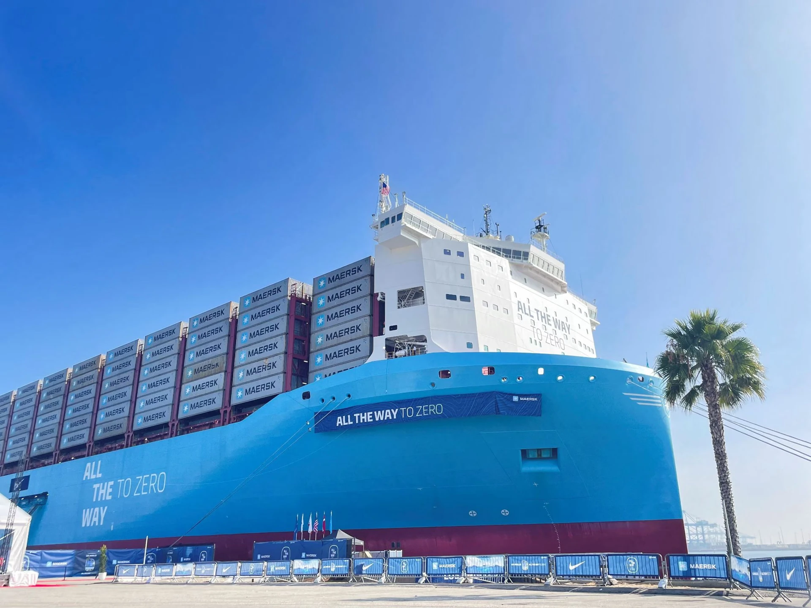
IEA / ICCT via Our World in Data · porcentagens do CO₂ do transporte
Menos viagens de carro
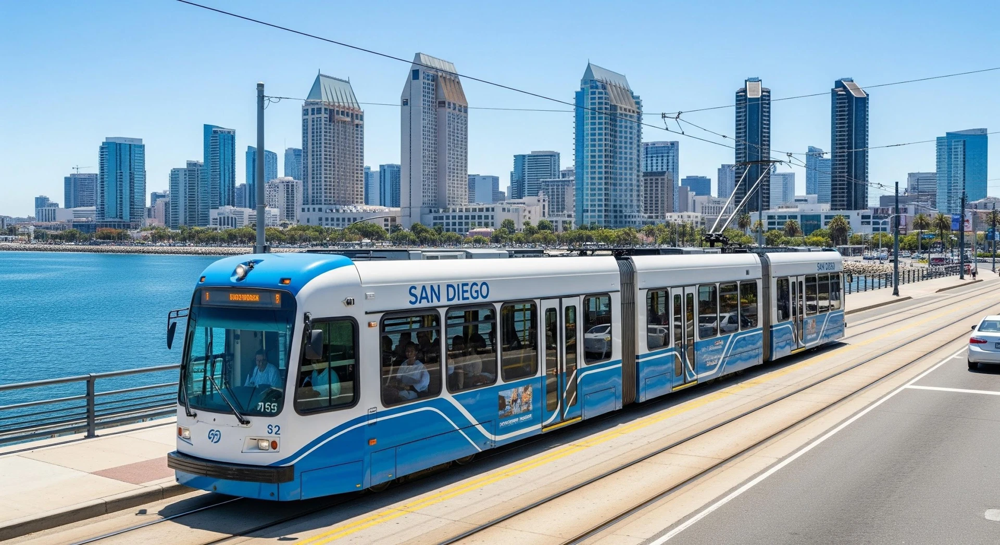
Caminhar · pedalar · compartilhar · transporte coletivo
Carros elétricos no ciclo de vida
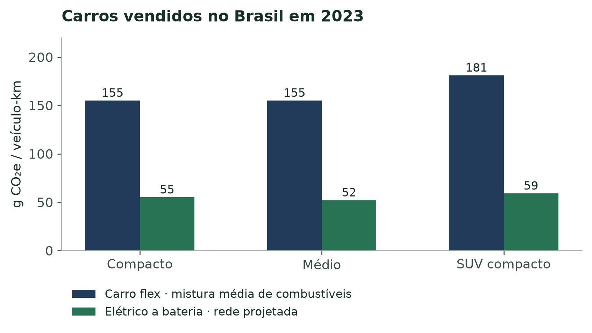
ICCT Brasil, 2023 · modelo de vida útil: 22 anos e 288.000 km
Quanto pesa a energia?
Energia armazenada ≠ autonomia
Décadas de operação
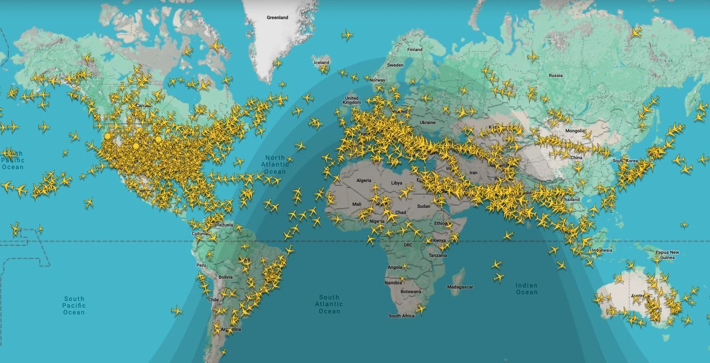
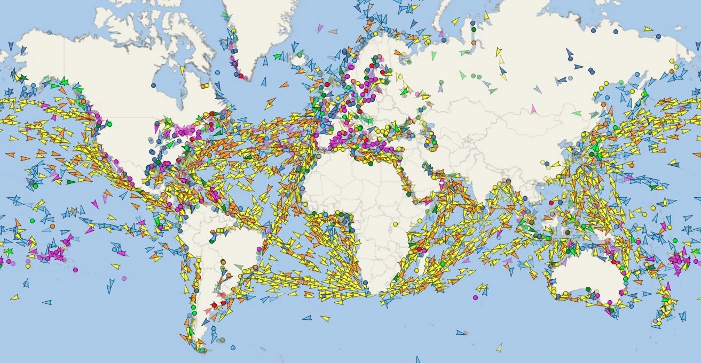
25–30 anos · duas referências de vida útil
Combustível sustentável
de aviação
Matéria-prima → processo → ciclo de vida
Rotas para o combustível de aviação
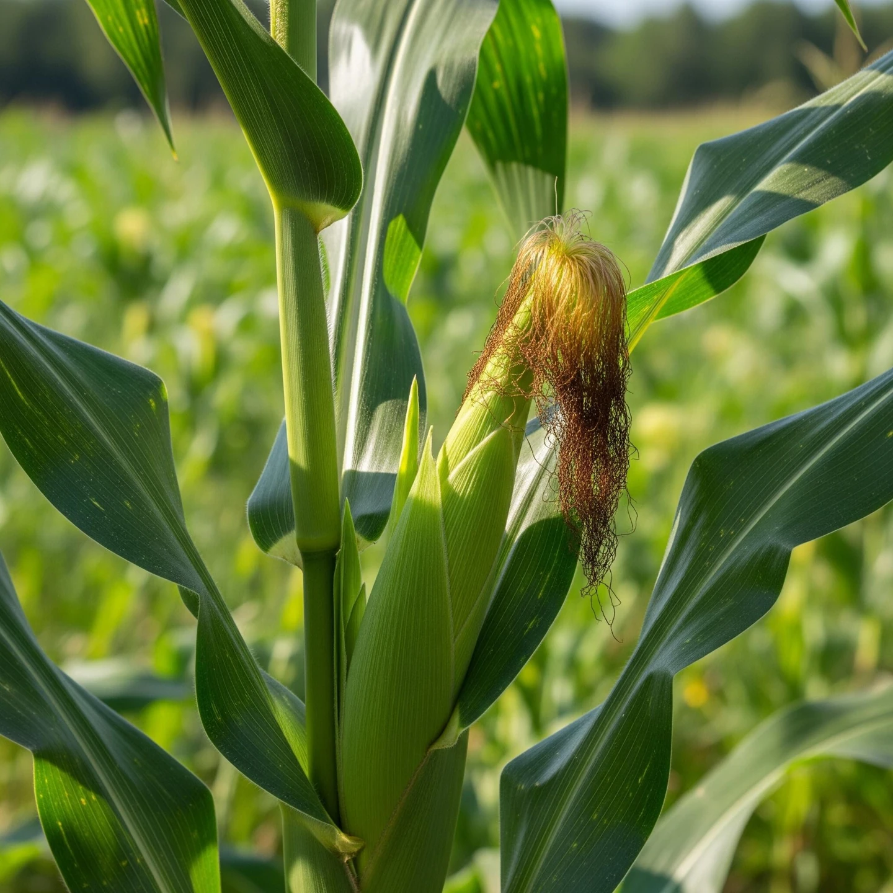
Etanol → ATJ
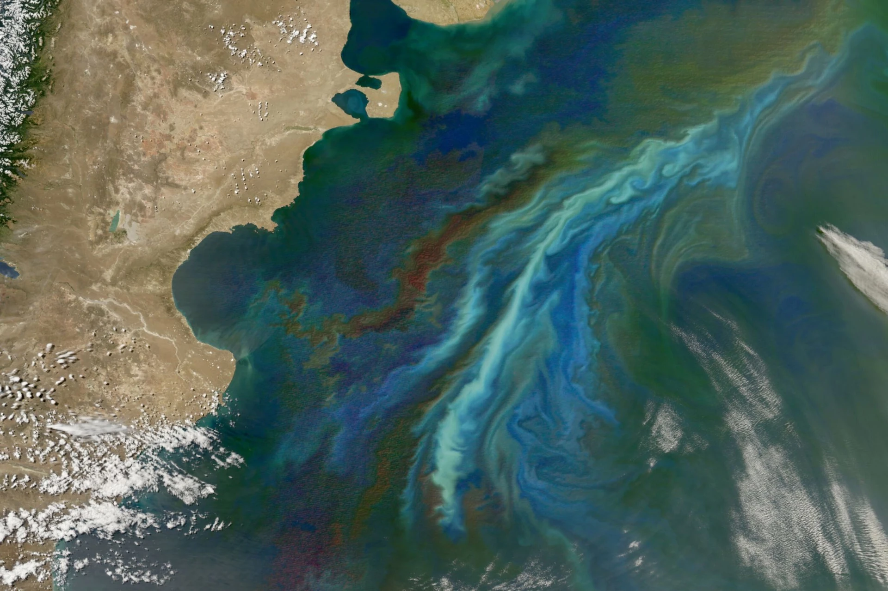
Algas → conversão
Diferentes matérias-primas, processos e níveis de maturidade
Algas: diversidade e possibilidades
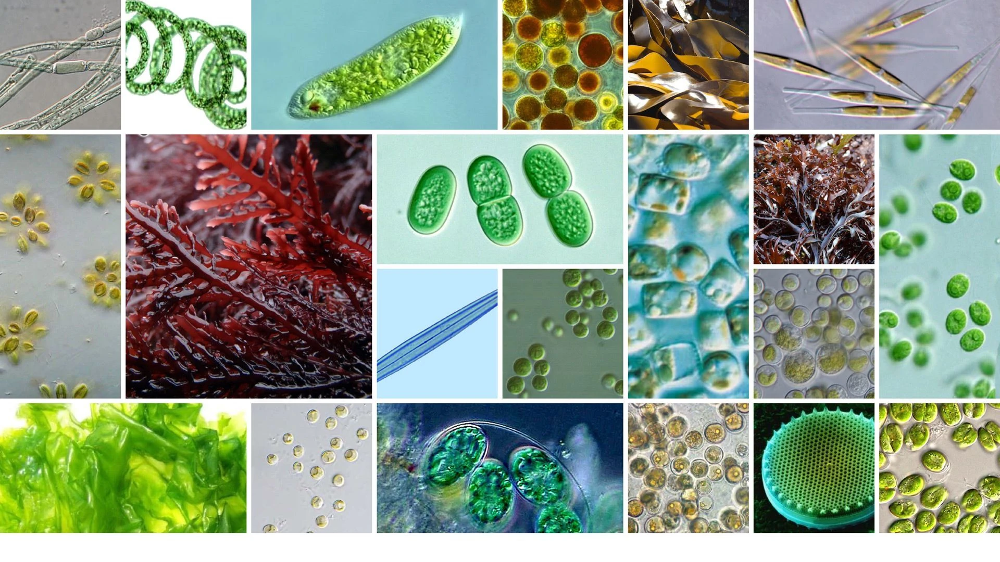
Luz · CO₂ · água · nutrientes
Da biomassa ao combustível
Rotas químicas distintas · HTL é apresentada como rota de pesquisa
Materiais de carbono biológico
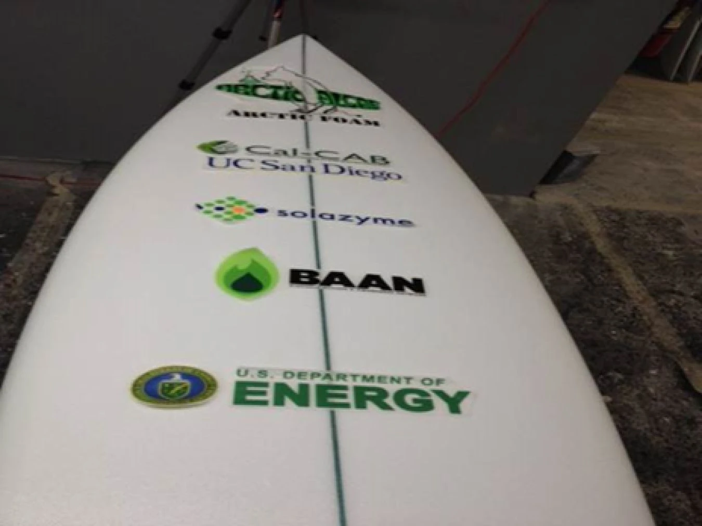
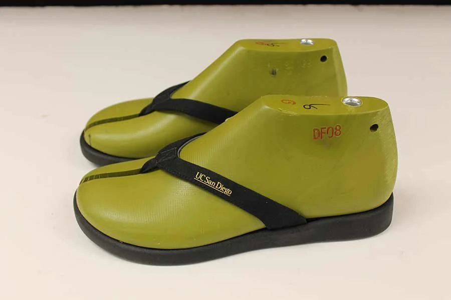
Origem do carbono · desempenho · destino final
Do organismo ao processo
Chlamydomonas pacifica
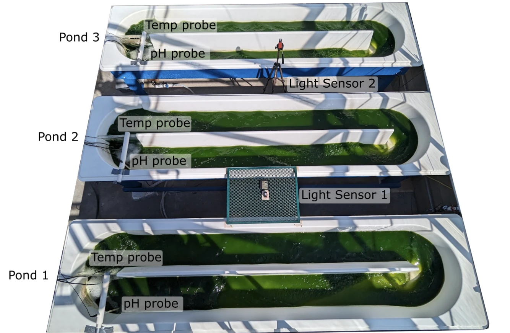
Tanques 1–3 · sondas de temperatura e pH · sensores de luz
Fotografia do estudo de enzima · pré-publicação
Selecionar e testar tolerância
Crescimento · estabilidade · produtividade
Mais lipídios e amido
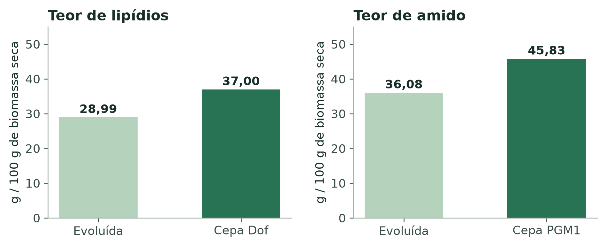
Gupta, Dutra Molino e colaboradores · 2025 · cepas distintas · valores centrais
Produtos demonstrados
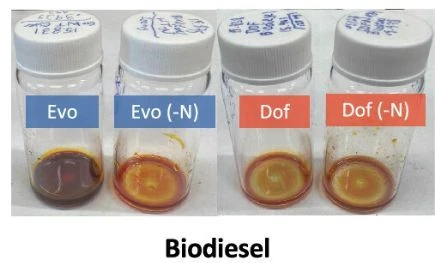
Biodiesel FAME
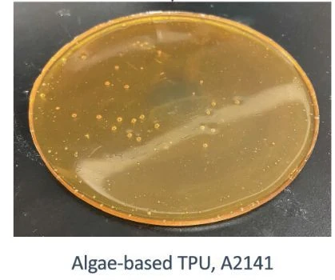
Poliuretano · A2141
Identidade · propriedades · recuperação
Algae Farm
Em duplas: escolha um produto e complete um lote.
Observe o produto recuperado, o uso de água e o gasto de energia. Depois, avance para a discussão.
Algae Farm
Em duplas, complete um lote e compare o produto recuperado, a água e a energia.
O que tornou a rota melhor?
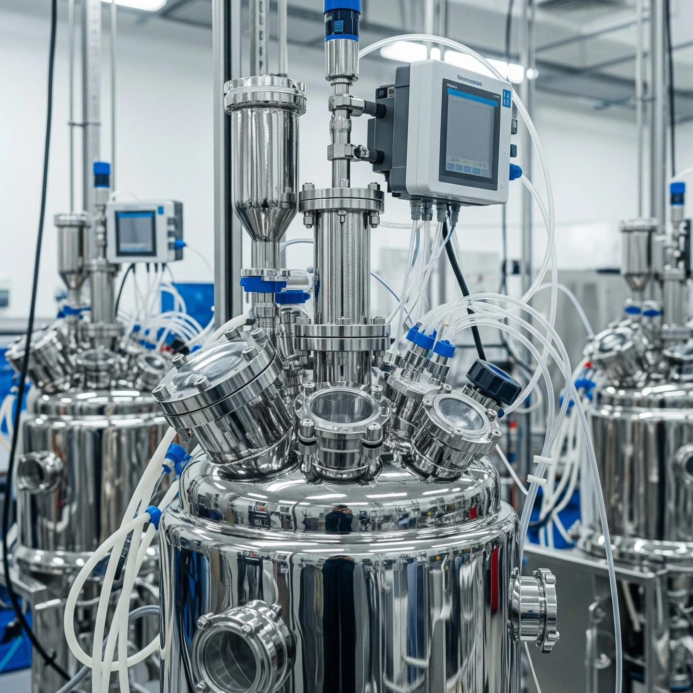
Produto recuperado
Energia e água
Evidência que falta